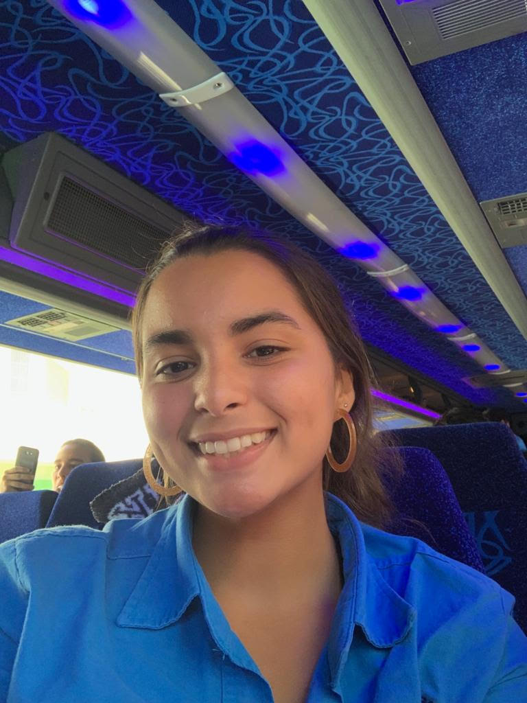
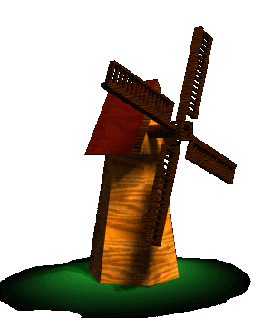

Alondra Asencio
Es una estudiante de la Escuela Secundaria de la Universidad de Puerto Rico que actualmente cursa el duodécimo grado. Dentro de su carga académica se encuentra la clase CCOM 1293 y el curso de literatura española. Es por esto que la estudiante decidió crear esta página como trabajo interdisciplinario, uniendo sus conocimientos adquiridos sobre la programación Raspian y de la obra conocida "Don Quijote de la Mancha".
¡Gracias por visitar!
